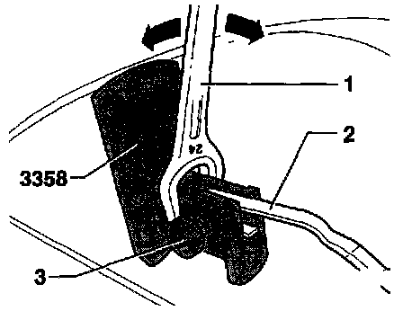
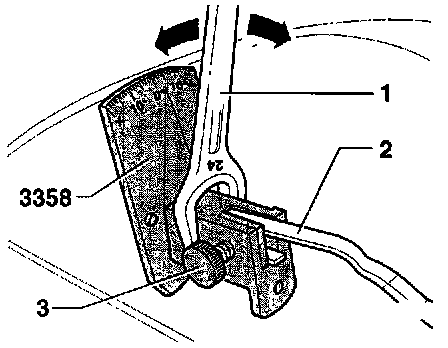

Wiper Blade Contact Angle
Checking Contact Angle:- Bring wiper arm to rest position.
- Remove wiper blade.

- Place wiper arm -2- in wiper arm adjusting tool 3358 and secure with retaining screw -3-.
- Compare angle indicated with specification below:
Driver side (Wiper blade with plastic spoiler) 0 °
Driver side - 3 °
Passenger side 0 °
Rear window wiper + 3 °
Tolerance ± 2 °
Adjusting Wiper Arm:

- Use 24 mm open end wrench -1- on wiper arm adjusting tool 3358 and twist wiper arm -2- in direction of arrows until setting matches specification above.
- Loosen retaining screw -3- and remove wiper arm adjusting tool 3358 from wiper arm -2- then reinstall and recheck.
- Compare angle indicated with specification above.
- If necessary, repeat setting and checking procedure until specification is met.
- Remove adjusting tool and re-install wiper blade.